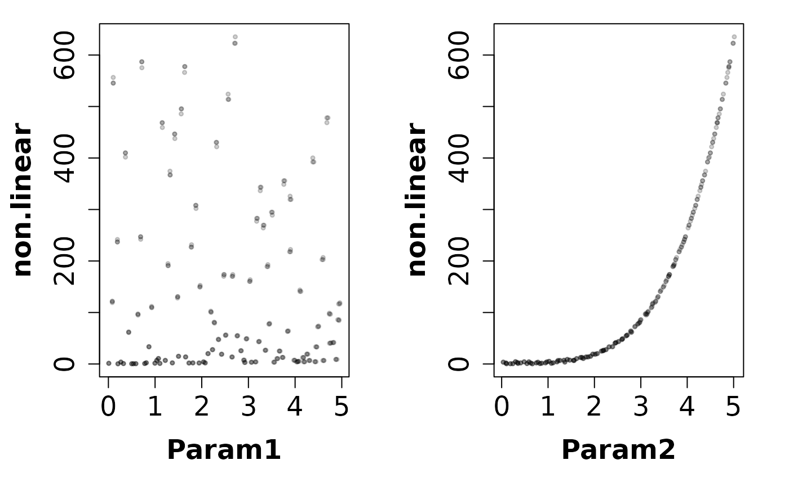
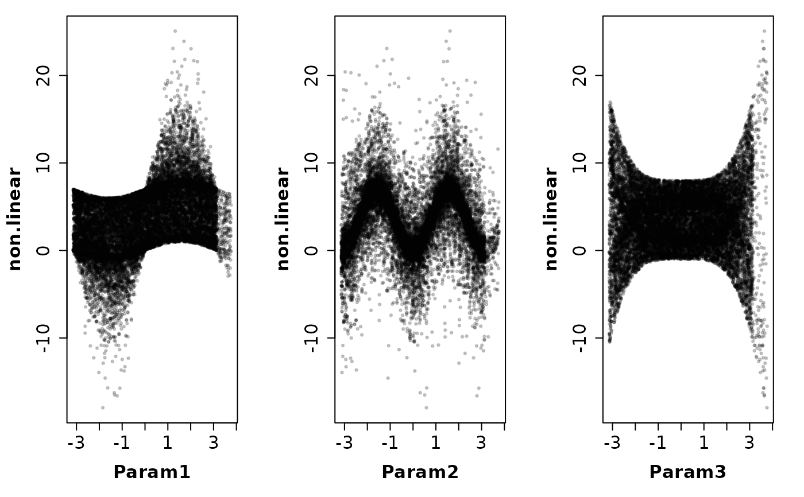

Latin-Hypercube One-factor-At-a-Time
lhoat.RdThis function implements the Latin-Hypercube One-factor-At-a-Time procedure developed by van Griensven et al., (2006) for sensitivity analysis of model parameters
Arguments
- fn
function or character with the name of a valid R function to be analysed. The character value ‘hydromod’ is used to specify that an R-external model code (i.e., an executable file that needs to be run from the system console) will be analised instead of an R function.
-) When
fn!='hydromod', the first argument offnhas to be a vector of parameters over which the analysis is going to take place. It should return a scalar result. Whenfn!='hydromod'the algorithm uses the value(s) returned byfnas both model output and its corresponding goodness-of-fit measure.-) When
fn=='hydromod'the algorithm will analyse the model defined bymodel.FUNandmodel.args, which are used to extract the values simulated by the model and to compute its corresponding goodness-of-fit measure.- ...
OPTIONAL. Only used when
fn!='hydromod'.further arguments to be passed to
fn.- lower
numeric, lower boundary for each parameter. If
loweris a named object, the names of each element on it are used as names of each parameter
Note foroptimusers: in hydroPSO the length oflowerandupperare used to define the dimension of the solution space.- upper
numeric, upper boundary for each parameter. If
upperis a named object, the names of each element on it are used as names of each parameter. However, ifloweris also a named object, the names inlowerhave priority over those inupperNote for
optimusers: in hydroPSO the length oflowerandupperare used to define the dimension of the solution space.- control
a list of control parameters. See ‘Details’
- model.FUN
OPTIONAL. Used only when
fn='hydromod'character, valid R function representing the model code to be calibrated/optimised.
- model.FUN.args
OPTIONAL. Used only when
fn='hydromod'list with the arguments to be passed to
model.FUN.
Details
The control argument is a list that can supply any of the following components:
- N
numeric, number of strata to be used for sampling the range of each parameter, as provided in
params.ranges- f
numeric, fraction of the parameter's range by which each single parameter of the initial LHS is changed within the Morris OAT design.
Please be aware that
fshould be carefully chosen. In particular, you should take into account the value ofNwhen choosing the value off, otherwise parameter sets may violate the user-defined parameter ranges.- drty.in
character, path to the directory storing the input files required for PSO, i.e. ‘ParamRanges.txt’ and ‘ParamFiles.txt’
- drty.out
character, path to the directory storing the output files generated by hydroPSO
- param.ranges
OPTIONAL. Used only when
fn='hydromod'
character, name of the file storing the desired range of variation of each parameter- digits
OPTIONAL. Used only when
write2disk=TRUE
numeric, number of significant digits used for writing the outputs in scientific notation- normalise
logical, indicates whether the parameter values have to be normalised to the [0,1] interval during the sesnsitivity analysis or not
It is recommended to use this option when the search space is not an hypercube. By defaultnormalise=FALSE- gof.name
character, ONLY used for identifying the goodness-of-fit of each model run and writing it to the LH_OAT-gof.txt output file
- do.plots
logical, if TRUE a PNG plot with the comparison between observed and simulated values is produced for each parameter set used in the LH-OAT
- write2disk
logical, indicates if the output files will be written to the disk
- verbose
logical, if TRUE progress messages are printed
- REPORT
OPTIONAL. Used only when
verbose=TRUE
The frequency of report messages printed to the screen. Default to every 100 parameter sets- parallel
character, indicates how to parallelise ‘lhoat’ (to be precise, only the evaluation of the objective function
fnis parallelised). Valid values are:-)none: no parallelisation is made (this is the default value)
-)multicore: parallel computations for machines with multiple cores or CPUs. The evaluation of the objective function
fnis done with themclapplyfunction of the parallel package. It requires POSIX-compliant OS (essentially anything but Windows)-)parallel: parallel computations for network clusters or machines with multiple cores or CPUs. A ‘FORK’ cluster is created with the
makeForkClusterfunction. Whenfn.name="hydromod"the evaluation of the objective functionfnis done with theclusterApplyfunction of the parallel package. Whenfn.name!="hydromod"the evaluation of the objective functionfnis done with theparRapplyfunction of the parallel package.-)parallelWin: parallel computations for network clusters or machines with multiple cores or CPUs (this is the only parallel implementation that works on Windows machines). A ‘PSOCK’ cluster is created with the
makeClusterfunction. Whenfn.name="hydromod"the evaluation of the objective functionfnis done with theclusterApplyfunction of the parallel package. Whenfn.name!="hydromod"the evaluation of the objective functionfnis done with theparRapplyfunction of the parallel package.- par.nnodes
OPTIONAL. Used only when
parallel!='none'
numeric, indicates the number of cores/CPUs to be used in the local multi-core machine, or the number of nodes to be used in the network cluster.
By defaultpar.nnodesis set to the amount of cores detected by the functiondetectCores()(multicore or parallel package)- par.pkgs
OPTIONAL. Used only when
parallel='parallelWin'
list of package names (as characters) that need to be loaded on each node for allowing the objective functionfnto be evaluated
Value
A list of two elements:
- ParameterSets
a matrix with all the parameter sets used in the LH-OAT.
- Ranking
a dataframe with four columns sorted in decreasing order of importance (from the most sentitive parameter to the least sensitive one): i) numeric ranking; ii) parameter ID; iii) relative importance indicator, and iv) a normalised relative importance for each parameter (the sum of all the values in the RelativeImportance.Norm field must be 1).
References
A. van Griensven, T. Meixner, S. Grunwald, T. Bishop, M. Diluzio, R. Srinivasan, A global sensitivity analysis tool for the parameters of multi-variable catchment models, Journal of Hydrology, Volume 324, Issues 1-4, 15 June 2006, Pages 10-23, DOI: 10.1016/j.jhydrol.2005.09.008.
Author
Mauricio Zambrano-Bigiarini, mzb.devel@gmail.com
Examples
##################################################
# Example 1: Linear model (n=3) #
##################################################
# Distributions for the three parameters, are all uniform in the intervals
# [0.5, 1.5], [1.5, 4.5], and [4.5,13.5], respectively.
# 1.1) defining the dimension of the parameter space
nparam <- 3
# 1.2) defining the model
linear <- function(x) x[1] + x[2] + x[3]
# Parameter ranges
lower <- c(0.5, 1.5, 4.5)
upper <- c(1.5, 4.5, 13.5)
# Given names to the parameters
names(lower) <- c("a","b","c")
# 1.3) Running the LH-OAT sensitivity analysis for the 'linear' test function
# The model is linear and since x[3] has the largest mean value, it should
# be the most important factor.
set.seed(123)
lhoat(
fn=linear,
lower=lower,
upper=upper,
control=list(N=50, f=0.015, write2disk=FALSE, verbose=FALSE)
)
#> $ParameterSets
#> a b c
#> [1,] 1.1969491 2.909852 12.129824
#> [2,] 1.2149033 2.909852 12.129824
#> [3,] 1.1969491 2.953499 12.129824
#> [4,] 1.1969491 2.909852 12.311771
#> [5,] 0.8449290 1.506666 6.730199
#> [6,] 0.8322550 1.506666 6.730199
#> [7,] 0.8449290 1.484066 6.730199
#> [8,] 0.8449290 1.506666 6.629246
#> [9,] 0.6114387 4.333014 13.040058
#> [10,] 0.6206103 4.333014 13.040058
#> [11,] 0.6114387 4.268018 13.040058
#> [12,] 0.6114387 4.333014 13.235659
#> [13,] 0.7843598 2.190138 9.423703
#> [14,] 0.7725944 2.190138 9.423703
#> [15,] 0.7843598 2.222990 9.423703
#> [16,] 0.7843598 2.190138 9.282347
#> [17,] 1.4129997 3.562483 9.603980
#> [18,] 1.3918047 3.562483 9.603980
#> [19,] 1.4129997 3.615920 9.603980
#> [20,] 1.4129997 3.562483 9.459920
#> [21,] 1.3106738 3.284420 7.239799
#> [22,] 1.3303339 3.284420 7.239799
#> [23,] 1.3106738 3.333686 7.239799
#> [24,] 1.3106738 3.284420 7.131202
#> [25,] 1.0882549 1.695941 6.233395
#> [26,] 1.1045787 1.695941 6.233395
#> [27,] 1.0882549 1.721380 6.233395
#> [28,] 1.0882549 1.695941 6.139894
#> [29,] 1.3836766 1.911819 9.314382
#> [30,] 1.4044317 1.911819 9.314382
#> [31,] 1.3836766 1.883141 9.314382
#> [32,] 1.3836766 1.911819 9.454098
#> [33,] 1.2533657 3.937081 12.307003
#> [34,] 1.2345652 3.937081 12.307003
#> [35,] 1.2533657 3.878025 12.307003
#> [36,] 1.2533657 3.937081 12.491608
#> [37,] 1.2905967 3.892481 8.744715
#> [38,] 1.3099557 3.892481 8.744715
#> [39,] 1.2905967 3.950868 8.744715
#> [40,] 1.2905967 3.892481 8.613544
#> [41,] 1.4367954 4.218747 12.727492
#> [42,] 1.4152434 4.218747 12.727492
#> [43,] 1.4367954 4.282028 12.727492
#> [44,] 1.4367954 4.218747 12.536580
#> [45,] 0.8253004 1.835661 12.866632
#> [46,] 0.8129209 1.835661 12.866632
#> [47,] 0.8253004 1.808126 12.866632
#> [48,] 0.8253004 1.835661 12.673633
#> [49,] 1.4653007 3.033875 13.304374
#> [50,] 1.4872802 3.033875 13.304374
#> [51,] 1.4653007 3.079384 13.304374
#> [52,] 1.4653007 3.033875 13.503939
#> [53,] 0.5180375 3.316450 6.537867
#> [54,] 0.5102669 3.316450 6.537867
#> [55,] 0.5180375 3.366197 6.537867
#> [56,] 0.5180375 3.316450 6.439799
#> [57,] 1.0797128 2.317200 8.628717
#> [58,] 1.0959085 2.317200 8.628717
#> [59,] 1.0797128 2.282442 8.628717
#> [60,] 1.0797128 2.317200 8.499286
#> [61,] 1.2693307 4.164410 11.818661
#> [62,] 1.2883706 4.164410 11.818661
#> [63,] 1.2693307 4.226876 11.818661
#> [64,] 1.2693307 4.164410 11.641382
#> [65,] 0.8630469 4.054372 8.322971
#> [66,] 0.8501012 4.054372 8.322971
#> [67,] 0.8630469 3.993556 8.322971
#> [68,] 0.8630469 4.054372 8.447815
#> [69,] 1.3792472 3.216082 4.772705
#> [70,] 1.3999359 3.216082 4.772705
#> [71,] 1.3792472 3.167841 4.772705
#> [72,] 1.3792472 3.216082 4.844296
#> [73,] 0.5480515 2.092815 8.885537
#> [74,] 0.5398307 2.092815 8.885537
#> [75,] 0.5480515 2.061423 8.885537
#> [76,] 0.5480515 2.092815 8.752253
#> [77,] 1.3457648 3.070239 7.950991
#> [78,] 1.3255783 3.070239 7.950991
#> [79,] 1.3457648 3.116292 7.950991
#> [80,] 1.3457648 3.070239 7.831726
#> [81,] 1.3296409 2.235178 11.918926
#> [82,] 1.3495855 2.235178 11.918926
#> [83,] 1.3296409 2.268706 11.918926
#> [84,] 1.3296409 2.235178 12.097710
#> [85,] 0.7334875 3.422860 6.066154
#> [86,] 0.7224852 3.422860 6.066154
#> [87,] 0.7334875 3.371517 6.066154
#> [88,] 0.7334875 3.422860 6.157146
#> [89,] 0.6870378 3.624537 11.667771
#> [90,] 0.6767322 3.624537 11.667771
#> [91,] 0.6870378 3.570169 11.667771
#> [92,] 0.6870378 3.624537 11.492755
#> [93,] 1.4583771 2.656952 5.392999
#> [94,] 1.4365015 2.656952 5.392999
#> [95,] 1.4583771 2.617097 5.392999
#> [96,] 1.4583771 2.656952 5.473894
#> [97,] 1.2145679 1.601183 4.869512
#> [98,] 1.2327864 1.601183 4.869512
#> [99,] 1.2145679 1.625200 4.869512
#> [100,] 1.2145679 1.601183 4.796469
#> [101,] 0.6279044 2.428671 10.720846
#> [102,] 0.6373230 2.428671 10.720846
#> [103,] 0.6279044 2.392241 10.720846
#> [104,] 0.6279044 2.428671 10.560033
#> [105,] 1.0339652 4.434941 7.491303
#> [106,] 1.0494747 4.434941 7.491303
#> [107,] 1.0339652 4.368417 7.491303
#> [108,] 1.0339652 4.434941 7.603673
#> [109,] 0.6685684 2.972525 7.750526
#> [110,] 0.6585399 2.972525 7.750526
#> [111,] 0.6685684 3.017113 7.750526
#> [112,] 0.6685684 2.972525 7.634268
#> [113,] 0.7652171 4.463829 4.535594
#> [114,] 0.7537389 4.463829 4.535594
#> [115,] 0.7652171 4.396872 4.535594
#> [116,] 0.7652171 4.463829 4.467560
#> [117,] 1.0566386 1.749173 5.904615
#> [118,] 1.0724881 1.749173 5.904615
#> [119,] 1.0566386 1.775411 5.904615
#> [120,] 1.0566386 1.749173 5.816046
#> [121,] 0.9509365 3.159739 9.930906
#> [122,] 0.9366725 3.159739 9.930906
#> [123,] 0.9509365 3.112343 9.930906
#> [124,] 0.9509365 3.159739 10.079869
#> [125,] 0.9926611 2.778712 8.230420
#> [126,] 0.9777712 2.778712 8.230420
#> [127,] 0.9926611 2.737032 8.230420
#> [128,] 0.9926611 2.778712 8.353876
#> [129,] 0.7479788 4.018161 10.974132
#> [130,] 0.7367591 4.018161 10.974132
#> [131,] 0.7479788 3.957889 10.974132
#> [132,] 0.7479788 4.018161 10.809520
#> [133,] 1.1545341 4.095433 10.299922
#> [134,] 1.1718521 4.095433 10.299922
#> [135,] 1.1545341 4.034002 10.299922
#> [136,] 1.1545341 4.095433 10.145423
#> [137,] 0.9318609 2.116051 9.815593
#> [138,] 0.9178830 2.116051 9.815593
#> [139,] 0.9318609 2.147792 9.815593
#> [140,] 0.9318609 2.116051 9.962827
#> [141,] 1.0157058 3.370084 7.092792
#> [142,] 1.0004702 3.370084 7.092792
#> [143,] 1.0157058 3.420635 7.092792
#> [144,] 1.0157058 3.370084 7.199184
#> [145,] 1.2294315 2.872086 13.486627
#> [146,] 1.2109901 2.872086 13.486627
#> [147,] 1.2294315 2.829005 13.486627
#> [148,] 1.2294315 2.872086 13.284328
#> [149,] 0.5376396 1.960451 10.611030
#> [150,] 0.5295750 1.960451 10.611030
#> [151,] 0.5376396 1.989858 10.611030
#> [152,] 0.5376396 1.960451 10.770196
#> [153,] 1.1703289 2.734591 11.220540
#> [154,] 1.1878838 2.734591 11.220540
#> [155,] 1.1703289 2.775610 11.220540
#> [156,] 1.1703289 2.734591 11.052232
#> [157,] 1.4869465 4.261201 11.070506
#> [158,] 1.4646423 4.261201 11.070506
#> [159,] 1.4869465 4.197283 11.070506
#> [160,] 1.4869465 4.261201 11.236564
#> [161,] 0.5774209 3.480378 12.432970
#> [162,] 0.5860822 3.480378 12.432970
#> [163,] 0.5774209 3.532584 12.432970
#> [164,] 0.5774209 3.480378 12.619465
#> [165,] 0.9032842 2.626220 5.532333
#> [166,] 0.8897350 2.626220 5.532333
#> [167,] 0.9032842 2.665613 5.532333
#> [168,] 0.9032842 2.626220 5.449348
#> [169,] 0.6594375 1.647988 10.093389
#> [170,] 0.6693291 1.647988 10.093389
#> [171,] 0.6594375 1.672708 10.093389
#> [172,] 0.6594375 1.647988 10.244790
#> [173,] 0.8129764 2.505516 5.604679
#> [174,] 0.8251710 2.505516 5.604679
#> [175,] 0.8129764 2.467933 5.604679
#> [176,] 0.8129764 2.505516 5.688749
#> [177,] 1.1279317 2.533499 6.310433
#> [178,] 1.1448507 2.533499 6.310433
#> [179,] 1.1279317 2.495497 6.310433
#> [180,] 1.1279317 2.533499 6.405089
#> [181,] 0.5879179 2.343896 6.880660
#> [182,] 0.5967366 2.343896 6.880660
#> [183,] 0.5879179 2.379054 6.880660
#> [184,] 0.5879179 2.343896 6.983869
#> [185,] 0.8810926 3.820217 7.613594
#> [186,] 0.8678762 3.820217 7.613594
#> [187,] 0.8810926 3.877520 7.613594
#> [188,] 0.8810926 3.820217 7.727797
#> [189,] 0.7020144 3.724314 5.198479
#> [190,] 0.7125446 3.724314 5.198479
#> [191,] 0.7020144 3.780179 5.198479
#> [192,] 0.7020144 3.724314 5.120502
#> [193,] 1.1150849 2.028996 11.516785
#> [194,] 1.1318112 2.028996 11.516785
#> [195,] 1.1150849 2.059431 11.516785
#> [196,] 1.1150849 2.028996 11.689537
#> [197,] 0.9620720 3.665943 9.143790
#> [198,] 0.9476409 3.665943 9.143790
#> [199,] 0.9620720 3.720932 9.143790
#> [200,] 0.9620720 3.665943 9.280947
#>
#> $Ranking
#> RankingNmbr ParameterName RelativeImportance RelativeImportance.Norm
#> 1 1 c 68.37806 0.68378422
#> 2 2 b 23.60193 0.23602056
#> 3 3 a 8.01948 0.08019522
#>
# \donttest{
local({
##################################################
# Example 2: non-linear monotonic model (n=2) #
##################################################
# Setting the user temporal directory as working directory
oldwd <- getwd()
on.exit(setwd(oldwd), add = TRUE)
setwd(tempdir())
# A uniform distribution in the interval [0, 5] was assigned to the two
# parameters of the 'non.linear' function (see below). This makes the second
# factor (x[2]) more important than the first one (x[1]).
# 2.1) defining the dimension of the parameter space
nparam <- 2
# 2.2) defining the model
non.linear <- function(x) x[1] + x[2]^4
# 2.3) Running the LH-OAT sensitivity analysis for the 'non.linear' test function
# The model is linear and since x[2] has the largest mean value, it should
# be the most important factor.
set.seed(123)
lhoat(
fn=non.linear,
lower=rep(0, nparam),
upper=rep(5, nparam),
control=list(N=100, f=0.005, write2disk=TRUE, verbose=FALSE)
)
# 2.4) reading ALL the parameter sets used in LH-OAT, and plotting dotty plots
params <- read_params(file="LH_OAT/LH_OAT-gof.txt", header=TRUE, skip=0,
param.cols=2:(nparam+1), of.col=1, of.name="non.linear",
ptype="dottyplot")
##################################################
# Example 3: non-monotonic model (ishigmai, n=3) #
##################################################
# All three input factors have uniform distributions in the range [-pi, pi].
# 3.1) defining the dimension of the parameter space
nparam <- 3
# 3.2) defining the model
ishigami <- function(x, a=7, b=0.1) {
sin(x[1]) + a*(sin(x[2]))^2 + b*(x[3]^4)*sin(x[1])
}
# 3.3) Running the LH-OAT sensitivity analysis for the 'Ishigami' test function.
# First order analytical sensitivity indices for the Ishigami function are:
# S1=0.3138, S2=0.4424, S3=0.0000. Therefore, the first order sensitivity
# indices indicate that factor x[2] is more important than factor x[1], and
# x[3] does not contribute to the unconditional variance of the Ishigami
# output.
# NOTE: in the following example, parameters are correctly ranked, but the
# normalised Relative Importance given as output ('RelativeImportance.Norm')
# can not be directly compared to first order sensitivity indices.
set.seed(123)
lhoat(
fn=ishigami,
lower=rep(-pi, nparam),
upper=rep(pi, nparam),
control=list(N=5000, f=0.1, write2disk=TRUE, verbose=FALSE, normalise=TRUE)
)
# 3.4) Reading ALL the parameter sets used in LH-OAT, and plotting dotty plots
params <- read_params(file="LH_OAT/LH_OAT-gof.txt", header=TRUE, skip=0,
param.cols=2:(nparam+1), of.col=1, of.name="non.linear",
ptype="dottyplot")
}) # local END
#>
#> [ Reading the file 'LH_OAT-gof.txt' ... ]
#> [ Total number of parameter sets: 300 ]
#>
#> [ Plotting ... ]

#>
#> [ Reading the file 'LH_OAT-gof.txt' ... ]
#> [ Total number of parameter sets: 20000 ]
#>
#> [ Plotting ... ]

# } # donttest END